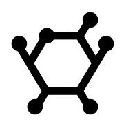

| Over twice the percentage of boys took advanced placement computer science and statistics classes. |
|  27% of both girls and boys said that science was their favorite subject disproving a common misconception that girls "just aren't interested in STEM" |
Over twice the percentage of girls thought that it was more difficult for girls in STEM with only 22.9% of boys gave a rating of 4 or 5 compared to 50% of girls. |
| 35.7% of girls thought that it was difficult to find interesting opportunities in STEM, with ratings of 4 or 5, compared to only 22.7% of boys. |